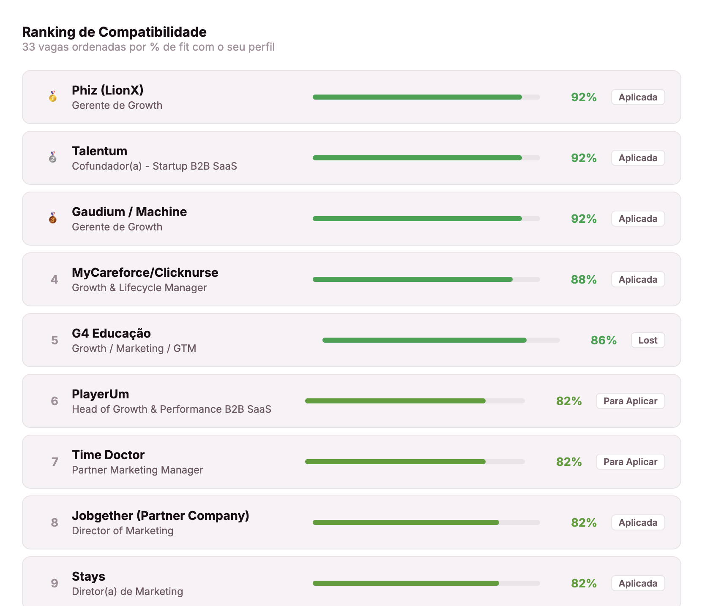

Cada detalhe pensado para transformar
busca em oferta.

Entenda em segundos por que você é, ou não, a pessoa certa para a vaga.
Antes de se candidatar, o Liplop analisa o job description e compara com o seu perfil. Você recebe um score de fit, seus pontos fortes, os gaps reais e os próximos passos concretos para aumentar sua chance de aprovação. Sem achismo. Sem surpresa no meio do processo.

Saber o fit é metade da equação. A outra metade é o currículo certo.
A maioria dos candidatos envia o mesmo currículo para todas as vagas, e é eliminada antes de qualquer recrutador abrir o arquivo. O Liplop analisa o que a vaga exige e gera uma versão do seu currículo com as palavras-chave certas, no formato que os sistemas de triagem automática estão procurando.
Não é um template genérico. É o seu histórico real, reposicionado para essa vaga específica, com a linguagem do setor, as métricas que o recrutador quer ver e a narrativa que aumenta sua probabilidade de chegar à entrevista.

Pare de se candidatar por intuição. Candidate-se por dado.
A maioria aplica pelo feeling e desperdiça horas em vagas que nunca teriam virado oferta. O Liplop analisa cada job description, cruza com o seu perfil e gera um score de fit objetivo. As vagas com maior chance aparecem no topo, e é só nelas que você investe o esforço real: currículo adaptado, mensagem personalizada, pesquisa da empresa.

Você vê o todo e sabe onde agir.
Sem visibilidade do funil, você distribui energia de forma igual para vagas com potenciais completamente diferentes. O Liplop muda isso: cada vaga tem um fit score automático que mostra onde vale mais a pena investir, e um próximo passo claro: aplicar, fazer follow-up, buscar uma indicação. Você para de improvisar e começa a executar com estratégia.

Chegou na entrevista. Agora não dá pra ir no improviso.
Você conseguiu a entrevista, mas entra sem saber o que aquela empresa valoriza, o que vão testar pra esse cargo e onde é melhor não tocar. Aí trava numa pergunta, fala demais onde devia segurar, e perde uma vaga que era pra ser sua.
O Liplop estuda a vaga, a empresa e o seu histórico e te entrega o plano da conversa: o que provavelmente vão avaliar e o que você deve destacar na sua narrativa para se posicionar como a pessoa certa, e o que é melhor evitar falar para não se queimar. Você entra preparado, não na sorte.
Buscador de vagas com maior fit
e maior probabilidade de aprovação.
Chega de garimpar manualmente. A IA do Liplop varre LinkedIn, Gupy e outros portais, cruza com o seu perfil e entrega só as vagas onde você tem real chance de virar oferta.